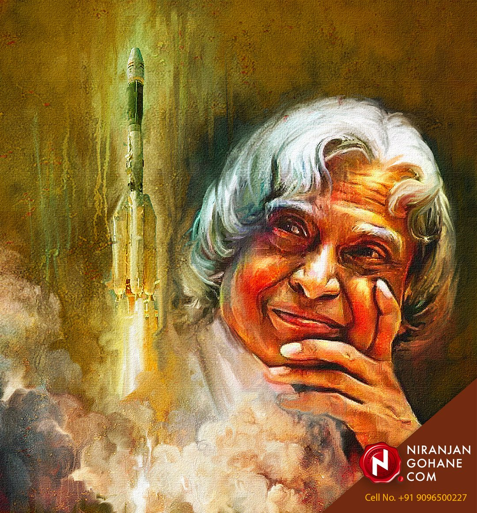
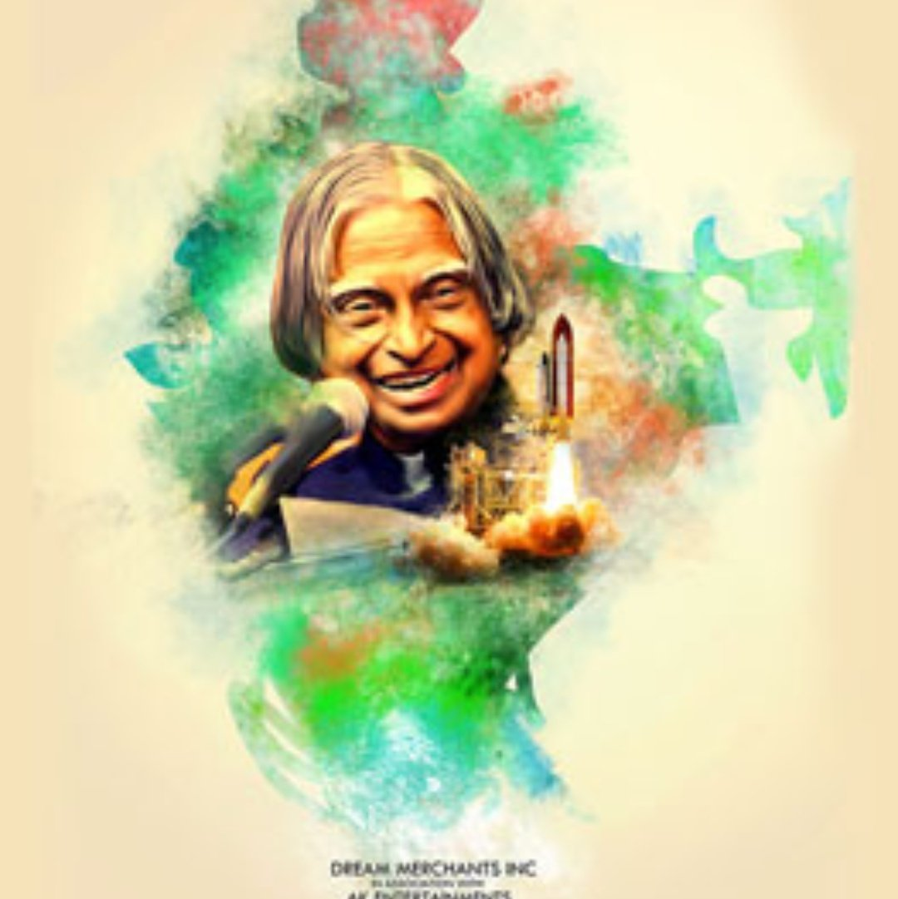

Dr. APJ abdul kalam sir
AS A SCIENTIST

Kalam served as the Chief Scientific Adviser to the Prime Minister and Secretary of the Defence Research and Development Organisation from July 1992 to December 1999. The Pokhran-II nuclear tests were conducted during this period in which he played an intensive political and technological role. Kalam served as the Chief Project Coordinator, along with Rajagopala Chidambaram, during the testing phase.[11][32] Media coverage of Kalam during this period made him the country's best known nuclear scientist.[33] However, the director of the site test, K Santhanam, said that the thermonuclear bomb had been a "fizzle" and criticised Kalam for issuing an incorrect report.[34] Both Kalam and Chidambaram dismissed the claims.[35]
In 1998, along with cardiologist Soma Raju, Kalam developed a low cost coronary stent, named the "Kalam-Raju Stent".[36][37] In 2012, the duo designed a rugged tablet computer for health care in rural areas, which was named the "Kalam-Raju Tablet".[38]
AS A PRESIDENT

Sir Kalam was entitled to be the 11th president of India. His term period of 25th July 2002 to 25th July 2007 was achieved by winning a presidential election in 2002 with a massive margin of votes. National Democratic Alliances’ nominated him to be president and it was supported by Samajwadi Party and National Congress Party. He was lovingly called as peoples’ president as he had done uncountable works for the welfare of the people and through the entire country.